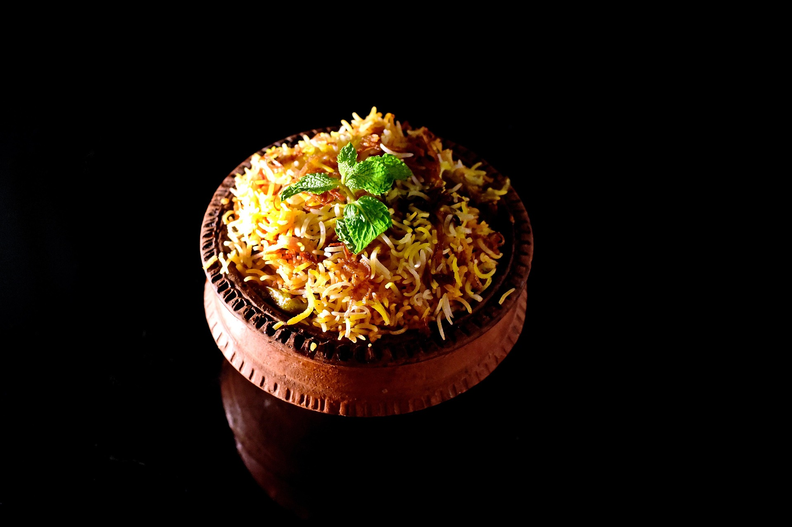

Home
Biriyani

The Crown Jewel of Rice Dishes
Biryani is much more than a meal; it is a fragrant, multi-sensory celebration of history and spice. This iconic dish features long-grain Basmati rice layered with succulent marinated meat—usually goat, chicken, or lamb—or seasonal vegetables. What sets it apart is the dum cooking method, where the pot is sealed with dough to trap steam, allowing the rice to absorb the rich essences of saffron, fried onions, and whole spices like cardamom and star anise.
From the spicy punch of a Hyderabadi biryani to the subtle, potato-infused charm of the Kolkata style, every region offers a unique thumbprint. It is a masterpiece of balance, where every grain of rice is distinct, fluffy, and infused with bold, aromatic soul.
Ingredients
To make an authentic Biryani (specifically Chicken Dum Biryani), the ingredients are generally divided into three main components: the meat marinade, the par-boiled rice, and the aromatics for layering.
1. The Marinade (The Falvor Base)
- Protien 1 kg chicken (bone-in, skinless) or mutton.
- Dairy 1 cup thick Greek yogurt (to tenderize the meat).
- Aromatics
- 2 tbsp ginger-garlic paste
- 2-4 slit green chillies
- Dry Spices
1 tsp turmeric, 1-2 tbsp red chili powder, 1
- 1 tsp turmeric
- 1-2 tbsp red chili powder
- 1 tbsp coriander powder
- 2 tsp Garam Masala (or Biriyani Masala)
2. The Rice (The Foundation)
- Rice 500g-700g aged Basmati rice (soaked for 30 minutes).
- Whole Spices (for boiling water)
- 2-3 green cardamoms
- 1 black cardamom
- 1-inch cinnamon stick
- 2-3 cloves
- 1 bay leaf
- 1 tsp shahi jeera (caraway seeds).
- Seasoning A generous amount of salt (the water should taste like the sea).
3. The Layering & Finish
- Birista 2 large onions deep-fried until golden brown and crispy.
- Fat 3-4 tbsp Ghee (clarified butter) for richness.
- Infusion A pinch of saffron threads soaked in 1/4 cup warm milk.
- Optional 1 tsp kewra water or Rose water for aroma.
Steps
The "Dum" technique (meaning "to breathe") is the secret to a perfect biryani. It involves slow-cooking under pressure so the rice and meat steam in their own juices.
Here is how you master it without burning the bottom:
1. Preparation of the Pot
Choose a heavy-bottomed pot (like a dutch oven or a traditional handi)
- The Bottom Layer Place the marinated meat at the very bottom
- The Rice Layer Drain your rice when it is 70% cooked. Spread it evenly over the meat.
2. The Final Flourish
Before sealing, add these on top of the rice to create aroma
- The Saffron milk for those yellow streaks
- A generous drizzle of Ghee around the edges to prevent sticking
- The Birista (fried onions), fresh mint, and coriander
3. The Perfect Seal
You must prevent steam from escaping. You have two options:
- Traditional Roll a long "snake" of wheat flour dough (atta) and press it onto the rim of pot, then press the lid down firmly to create a seal
- Modern Cover the pot tightly with a double layer of aluminum foil before putting the lid on.
4. The Heat Cycle
This is the most critical part to avoid a scorched bottom
- High Heat Place the pot on high heat for 5-8 mins until you see a little steam trying to escape
- The Tawa Trick If you don't have a very thick-bottomed pot, place a 'tawa' under the pot
- Low Heat (The Dum) Turn the heat to the lowest possible setting and let it cook for 25-30 mins.
- Resting Switch off the heat but do not open the lid for at least 15 mins. This allows the moisture to redistribute.